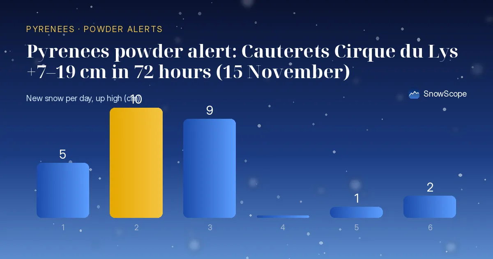

Pyrenees powder alert: Cauterets Cirque du Lys +7–19 cm in 72 hours (15 November)
On 15 November, the Pyrenees got a fresh snow event that brought 7–19 cm to the high peaks in 72 hours. At Cauterets Cirque du Lys (2,420 m), upper-slope snow depth stands at 9 cm now, but rain falls below 2,160 m so the picture is mixed: powder stays only where it is cold enough.
See the live snow forecast for Cauterets Cirque du Lys in the SnowScope appSnow depth, powder alerts and the 3D map, free.
Three days of snow across the range
Between 13 and 15 November, snow fell on nearly all major Pyrenees resorts. Cauterets Cirque du Lys caught 19 cm in that window; Candanchu and Gourette each gained 18–19 cm. Piau-Engaly and Formigal took 15–17 cm. The storm was strongest on 14 November.
These 72-hour totals are estimates; actual values depend on where you measure and how the wind moved the snow. Snow now covers 1,420 km² in the range, with 25 of the 53 tracked resorts showing some snow on their upper slopes—up from 20 resorts just two days earlier.
| Resort | Snow depth | New snow, 72 h | Coming, next days | Top |
|---|---|---|---|---|
| Cauterets Cirque du Lys | 9 cm | 19 cm | 3 cm | 2,420 m |
| Piau-Engaly | 8 cm | 15 cm | 3 cm | 2,527 m |
| Candanchu | 8 cm | 19 cm | 2 cm | 2,238 m |
| Gourette | 11 cm | 18 cm | 2 cm | 2,453 m |
| Formigal | 5 cm | 17 cm | 1 cm | 2,264 m |

Height and cold: who keeps the snow
On 15 November, snow fell above about 2,160 m in the range. Below that line, rain took over. This split between snow and rain means the depth you read depends on the altitude. Cauterets Cirque du Lys splits into three zones: 4 cm sits at the summit (2,420 m), but 0 cm remains at mid-mountain (2,072 m) or the base (1,725 m).
Ground truth from mountain stations on 13 November: Certascan (2,398 m) held 8 cm, Boí (2,537 m) had 6 cm, and Núria (1,971 m) recorded 5 cm. Each station sits at a fixed point, so these numbers show what the snowpack looked like in those exact spots, not across the whole slope.
The warm ceiling moves up
Freezing level on 15 November ranged from 2,400 m to 2,510 m at Cauterets Cirque du Lys—already close to the resort's top. By 17 November, that freezing level jumps to 2,830–3,680 m, well above the summit. When air warms above a fresh snowpack, wet snow speeds downhill and hardens overnight, so the bonus snow depth shrinks fast.
This is crucial for water planning: snow stays longer in the highest cirques, but slopes below 2,500 m will lose depth quickly once rain starts mixing in.
What comes next
By 18 November, the forecast adds small amounts: 7 cm more at Cauterets Cirque du Lys, 6 cm at Piau-Engaly, and 15–19 cm at Candanchu. But forecasts shift; the weather picture two days out is rougher than the one you see the day before you travel.
After 18 November, snow cover in the Pyrenees is forecast to shrink. The 1,420 km² covered today drops to about 560 km² by 18 November, and only 16 of the 53 resorts hold snow on their upper slopes.
Avalanche context and timing
The Météo-France avalanche service (Bulletin d'estimation du risque d'avalanche) rates the Cauterets Cirque du Lys area at danger level 1 today. Fresh snow does raise concerns on steep, sheltered slopes over the next few days, so check the bulletin if you plan off-piste routes.
Powder quality peaks within hours of the snowfall. Early starts on 16–17 November catch the best snow before sun and wind work the surface.
Tips for skiers
- High, north-facing slopes hold fresh snow longest; south-facing slopes and low elevations lose it fast once rain begins. Plan routes by aspect and altitude.
- The Certascan and Boí station readings show 6–8 cm of real snow on the ground at 2,400+ m. Use these benchmarks to judge what lies under the skis.
- Freezing level hits 2,830–3,680 m on 17 November: above that height, more snow may fall; below it, rain dominates. Pack layers to adjust for mixed conditions.
- Before skiing off-piste, read the Météo-France avalanche bulletin and understand how fresh snow layered over wind and warming affects slope stability.
- Resort status changes often: confirm lifts and opening dates on each resort's website before you go.
About these numbers
Resort snow depths are the deepest snow on the resort's upper slopes on the date shown; they are estimates for an area, not a measurement at one point. Forecasts can change. Always read the official avalanche bulletin before going off-piste.
Official avalanche bulletins: Météo-France – Bulletin d'estimation du risque d'avalanche
Cite this report
For research, teaching or the press: the numbers and charts are free to reuse under CC BY 4.0 with this citation.
SnowScope (2026), Pyrenees powder alert: Cauterets Cirque du Lys +7–19 cm in 72 hours (15 November), https://snowscope.app/blog/en/2026/11/pyrenees-cauterets-cirque-du-lys-fresh-snow-powder-alert-15-november-2026.html, accessed 2026-11-15
SnowScope (Atlas Labs). (2026, November 15). Pyrenees powder alert: Cauterets Cirque du Lys +7–19 cm in 72 hours (15 November). SnowScope snow reports. https://snowscope.app/blog/en/2026/11/pyrenees-cauterets-cirque-du-lys-fresh-snow-powder-alert-15-november-2026.html
BibTeX
@misc{snowscope2026pyreneescauteretscirqued,
author = {{SnowScope (Atlas Labs)}},
title = {Pyrenees powder alert: Cauterets Cirque du Lys +7–19 cm in 72 hours (15 November)},
year = {2026},
month = nov,
howpublished = {\url{https://snowscope.app/blog/en/2026/11/pyrenees-cauterets-cirque-du-lys-fresh-snow-powder-alert-15-november-2026.html}},
note = {Published 2026-11-15 18:24 UTC; accessed 2026-11-15}
}· CC BY 4.0 · Methods, data and tools →
Cauterets Cirque du Lys: snow and temperature by height, this winter vs last (tools) →
Follow Cauterets Cirque du Lys
Free: a message when fresh snow is coming, and the forecast every morning.
More snow reports

Fresh powder at three Pyrenees resorts, thin snow at all five, and warm days that risk crust. Here is what to pack and wear on 14 November.

Mixed rain and snow expected across the Pyrenees over the next three days, with the freezing level rising above resort summits by Sunday. New snow forecast between 13–24 cm at altitude.

Piau-Engaly leads the forecast with 37 cm of new snow by 13 November; 24 cm is expected on 12 November.